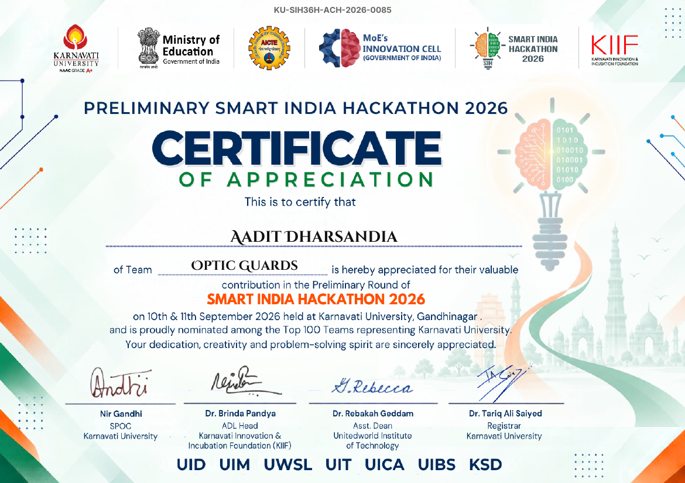

01
Programming
Writing logic, exploring software and building practical solutions.
CPython project useTypeScript project use
I'm Aadit — an Electronics & Communication Engineering student exploring the space where hardware, software and intelligent systems meet.
Hover or tap a keycap to discover a skill.
I enjoy turning ideas into things that can be tested, improved and experienced.
I'm pursuing Electronics & Communication Engineering (Hons.) at Karnavati University. My interests span electronics, programming, AI-assisted development and product thinking.
I like working across disciplines — from connecting sensors and microcontrollers to exploring computer-vision workflows and building useful web experiences.
A growing toolkit across electronics, programming and digital creation. Tap the keycaps above to explore.
Writing logic, exploring software and building practical solutions.
Working with microcontrollers, sensors and physical prototypes.
Turning concepts into structured models and understandable interfaces.
Using AI tools thoughtfully to accelerate research, development and experimentation.
Skill labels marked “project use” reflect technologies used in project work, not a claim of professional-level mastery.
A selection of projects and prototypes I've worked on or explored.

Intelligent video analytics for existing CCTV infrastructure.
HELIOS explores an intelligence layer that turns existing CCTV feeds into connected, evidence-backed operational insights. The project brings together detection, tracking, activity correlation and investigation workflows.
Team-lead coordination and research contribution across the project.
Exploring biosignals and simple device control.
NeuroSync is a working biosignal-based control prototype built using BioAmp EXG, an Arduino UNO R4 Minima and Python. It supports three working modes: blink detection triggers the Spacebar, eye-gaze detection sends Left/Right commands, and EEG beta-signal detection switches an LED ON/OFF.
Three working modes · Blink-to-Spacebar, gaze-to-Left/Right and EEG beta-to-LED.
Electronics & Communication Engineering (Hons.) · First Semester
Gujarat, IndiaScience stream foundation before beginning undergraduate engineering.
Skating — District-level competition participant
Swimming · VolleyballCourse completion · 1 hour 36 minutes
View certificate ↗Course completion · 10 hours
View certificate ↗I'm always interested in learning, exchanging ideas and collaborating on thoughtful projects.
aaditdharsandia07@gmail.com ↗